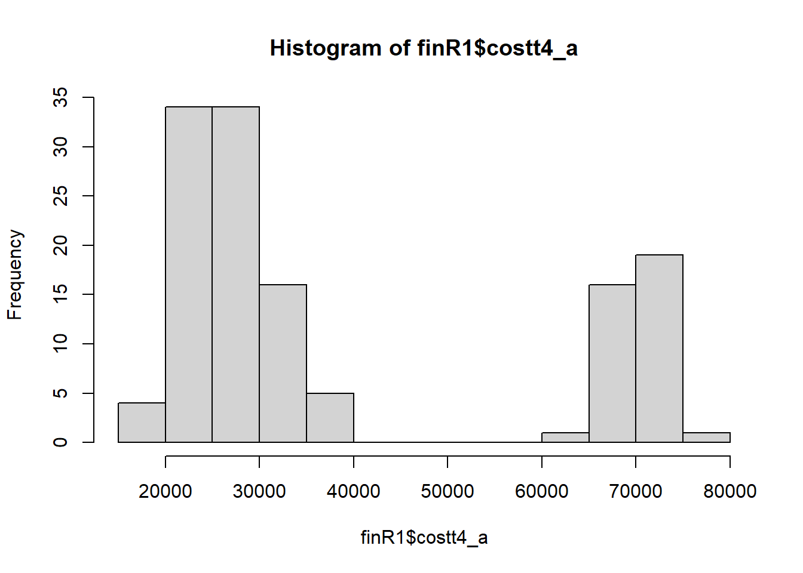
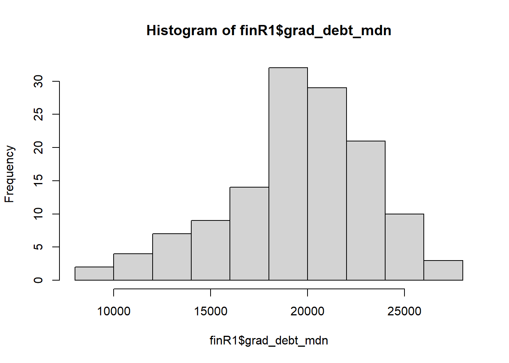
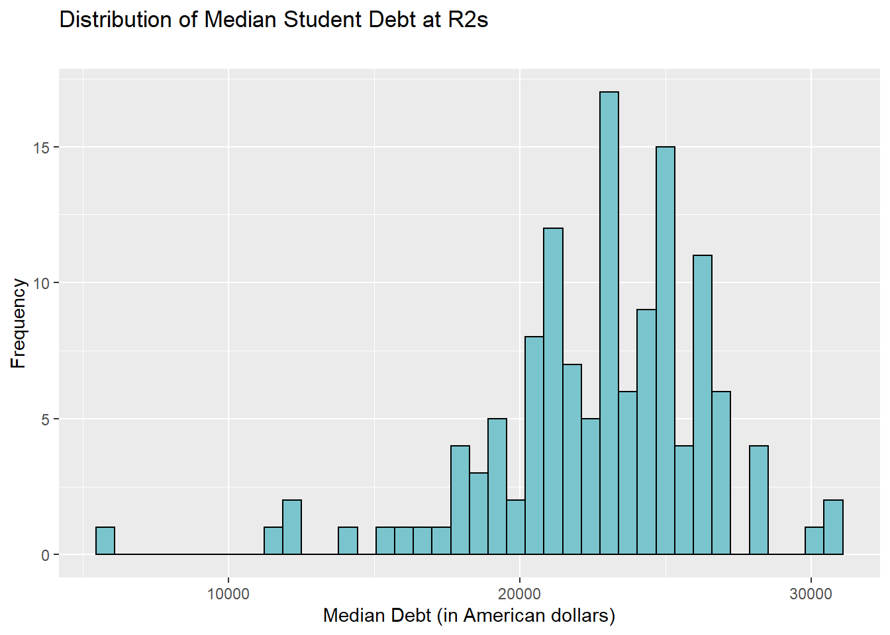
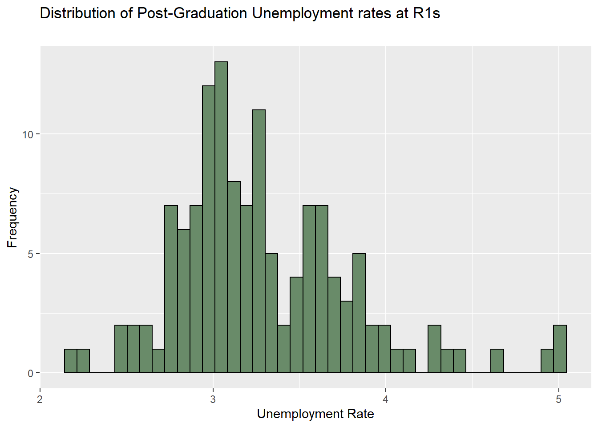
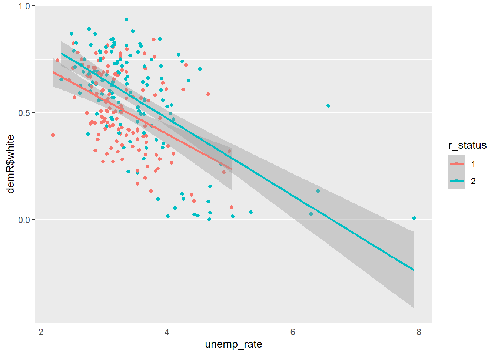

Section 4 Analysis
4.1 Import Packages
4.2 Transform Datasets
finR <- fin[fin$year == "latest",]
finR1 <- fin[fin$r_status == 1 & fin$year == "latest",]
finR2 <- fin[fin$r_status == 2 & fin$year == "latest",]
demR <- dem[dem$year == "latest",]
demR1 <- dem[dem$r_status == 1 & dem$year == "latest",]
demR2 <- dem[dem$r_status == 2 & dem$year == "latest",]
finR <- subset(finR, university %in% demR$university)4.3 Descriptives
## Min. 1st Qu. Median Mean 3rd Qu. Max.
## 0.0573 0.3900 0.5072 0.5129 0.6763 0.8408## [1] -0.2433317## [1] 2.272319## Min. 1st Qu. Median Mean 3rd Qu. Max.
## 0.0000 0.4507 0.6242 0.5529 0.7326 0.9348## [1] -0.9043165## [1] 2.917131## [1] "Tuition cost"## Min. 1st Qu. Median Mean 3rd Qu. Max. NA's
## 16927 24464 28408 38695 66923 75735 1cost_hist1 <- ggplot(finR1, aes(x =costt4_a)) +
geom_histogram(bins = 40, color = "black", fill = "red") +
labs(title = "Distribution of Tuition Costs at R1s",
subtitle = "",
x = "Cost (in American dollars)",
y = "Frequency")
cost_hist1## Warning: Removed 1 rows containing non-finite values (stat_bin).
## Min. 1st Qu. Median Mean 3rd Qu. Max. NA's
## 11299 21266 24098 33613 51214 71875 4cost_hist2 <- ggplot(finR2, aes(x =costt4_a)) +
geom_histogram(bins = 40, color = "black", fill = "pink") +
labs(title = "Distribution of Tuition Costs at R2s",
subtitle = "",
x = "Cost (in American dollars)",
y = "Frequency")
cost_hist2## Warning: Removed 4 rows containing non-finite values (stat_bin).
## [1] "Student debt"## Min. 1st Qu. Median Mean 3rd Qu. Max.
## 8700 17634 20000 19652 22027 27000debt_hist1 <- ggplot(finR1, aes(x = grad_debt_mdn)) +
geom_histogram(bins = 40, color = "black", fill = "cadetblue4") +
labs(title = "Distribution of Median Student Debt at R1s",
subtitle = "",
x = "Median Debt (in American dollars)",
y = "Frequency")
debt_hist1
## Min. 1st Qu. Median Mean 3rd Qu. Max. NA's
## 5500 20930 23167 22719 25000 30500 5debt_hist1 <- ggplot(finR2, aes(x = grad_debt_mdn)) +
geom_histogram(bins = 40, color = "black", fill = "cadetblue3") +
labs(title = "Distribution of Median Student Debt at R2s",
subtitle = "",
x = "Median Debt (in American dollars)",
y = "Frequency")
debt_hist1## Warning: Removed 5 rows containing non-finite values (stat_bin).
## [1] "Unemployment Rate"## Min. 1st Qu. Median Mean 3rd Qu. Max.
## 2.190 2.965 3.200 3.293 3.605 5.020unemp_hist1 <- ggplot(finR1, aes(x = unemp_rate)) +
geom_histogram(bins = 40, color = "black", fill = "darkseagreen4") +
labs(title = "Distribution of Post-Graduation Unemployment rates at R1s",
subtitle = "",
x = "Unemployment Rate",
y = "Frequency")
unemp_hist1
## Min. 1st Qu. Median Mean 3rd Qu. Max. NA's
## 2.320 3.040 3.360 3.545 3.900 7.920 6unemp_hist2 <- ggplot(finR2, aes(x = unemp_rate)) +
geom_histogram(bins = 40, color = "black", fill = "darkseagreen3") +
labs(title = "Distribution of Post-Graduation Unemployment rates at R2s",
subtitle = "",
x = "Unemployment Rate",
y = "Frequency")
unemp_hist2## Warning: Removed 6 rows containing non-finite values (stat_bin).
4.4 Wilcox for skewed bois
# R1 associated with student outcomes
# debt, skewed to all hell so non parametric t-test.
wilcox.test(formula=finR$grad_debt_mdn~finR$r_status)##
## Wilcoxon rank sum test with continuity correction
##
## data: finR$grad_debt_mdn by finR$r_status
## W = 4430.5, p-value = 2.092e-11
## alternative hypothesis: true location shift is not equal to 0# debt for R2 unis significantly differed from R1 students.
# non-working
t.test(finR$unemp_rate~finR$r_status)##
## Welch Two Sample t-test
##
## data: finR$unemp_rate by finR$r_status
## t = -2.7918, df = 208.77, p-value = 0.005728
## alternative hypothesis: true difference in means is not equal to 0
## 95 percent confidence interval:
## -0.41446370 -0.07138832
## sample estimates:
## mean in group 1 mean in group 2
## 3.292901 3.535827# cost differences between R1, R2.
# t.test(finR$costt4_a~finR$r_status)
# Cant do a t-test cause of the bimodal abomination
# Average annual R1 tuition cost: 41,571.97
# Average annual R2 tuition cost: 33,958.16## [1] -0.53727514.5 Main model
ggplot(finR, aes(unemp_rate, demR$white,colour=r_status)) + geom_point() + geom_smooth(method = "lm")## `geom_smooth()` using formula 'y ~ x'## Warning: Removed 4 rows containing non-finite values (stat_smooth).## Warning: Removed 4 rows containing missing values (geom_point).
4.6 Main model
# 3 White proportion moderates unemployment outcomes.
predictor <- as.integer(finR$r_status)
moderator <- demR$white
interaction <- predictor * moderator
outcome <- finR$unemp_rate
wlm <- lm(formula = outcome ~ predictor + moderator + interaction)
summary(wlm)##
## Call:
## lm(formula = outcome ~ predictor + moderator + interaction)
##
## Residuals:
## Min 1Q Median 3Q Max
## -1.2545 -0.3561 -0.0756 0.2262 3.1959
##
## Coefficients:
## Estimate Std. Error t value Pr(>|t|)
## (Intercept) 3.1622 0.3214 9.838 < 2e-16 ***
## predictor 0.7869 0.1943 4.049 6.83e-05 ***
## moderator -0.4052 0.5814 -0.697 0.4864
## interaction -0.8739 0.3418 -2.557 0.0111 *
## ---
## Signif. codes: 0 '***' 0.001 '**' 0.01 '*' 0.05 '.' 0.1 ' ' 1
##
## Residual standard error: 0.5667 on 254 degrees of freedom
## (4 observations deleted due to missingness)
## Multiple R-squared: 0.358, Adjusted R-squared: 0.3504
## F-statistic: 47.21 on 3 and 254 DF, p-value: < 2.2e-164.6.1 Decomposition
4.6.1.1 Simple model
predictor <- finR$r_status
outcome <- finR$unemp_rate
simplelm <- lm(formula = outcome ~ predictor)
summary(simplelm)##
## Call:
## lm(formula = outcome ~ predictor)
##
## Residuals:
## Min 1Q Median 3Q Max
## -1.2158 -0.4111 -0.1429 0.3239 4.3842
##
## Coefficients:
## Estimate Std. Error t value Pr(>|t|)
## (Intercept) 3.29290 0.06063 54.316 < 2e-16 ***
## predictor2 0.24293 0.08641 2.811 0.00532 **
## ---
## Signif. codes: 0 '***' 0.001 '**' 0.01 '*' 0.05 '.' 0.1 ' ' 1
##
## Residual standard error: 0.6939 on 256 degrees of freedom
## (4 observations deleted due to missingness)
## Multiple R-squared: 0.02995, Adjusted R-squared: 0.02616
## F-statistic: 7.904 on 1 and 256 DF, p-value: 0.0053154.6.1.2 Moderator direct effect
predictor <- demR$white
outcome <- finR$unemp_rate
moderatorlm <- lm(formula = outcome ~ predictor)
summary(moderatorlm)##
## Call:
## lm(formula = outcome ~ predictor)
##
## Residuals:
## Min 1Q Median 3Q Max
## -1.4686 -0.3936 -0.0933 0.2360 3.5797
##
## Coefficients:
## Estimate Std. Error t value Pr(>|t|)
## (Intercept) 4.34997 0.09914 43.88 <2e-16 ***
## predictor -1.75290 0.17198 -10.19 <2e-16 ***
## ---
## Signif. codes: 0 '***' 0.001 '**' 0.01 '*' 0.05 '.' 0.1 ' ' 1
##
## Residual standard error: 0.5942 on 256 degrees of freedom
## (4 observations deleted due to missingness)
## Multiple R-squared: 0.2887, Adjusted R-squared: 0.2859
## F-statistic: 103.9 on 1 and 256 DF, p-value: < 2.2e-164.6.1.3 Interaction Effect
predictor <- as.integer(finR$r_status)
moderator <- demR$white
interaction <- predictor * moderator
outcome <- finR$unemp_rate
interactionlm <- lm(formula = outcome ~ interaction)
summary(moderatorlm)##
## Call:
## lm(formula = outcome ~ predictor)
##
## Residuals:
## Min 1Q Median 3Q Max
## -1.4686 -0.3936 -0.0933 0.2360 3.5797
##
## Coefficients:
## Estimate Std. Error t value Pr(>|t|)
## (Intercept) 4.34997 0.09914 43.88 <2e-16 ***
## predictor -1.75290 0.17198 -10.19 <2e-16 ***
## ---
## Signif. codes: 0 '***' 0.001 '**' 0.01 '*' 0.05 '.' 0.1 ' ' 1
##
## Residual standard error: 0.5942 on 256 degrees of freedom
## (4 observations deleted due to missingness)
## Multiple R-squared: 0.2887, Adjusted R-squared: 0.2859
## F-statistic: 103.9 on 1 and 256 DF, p-value: < 2.2e-16